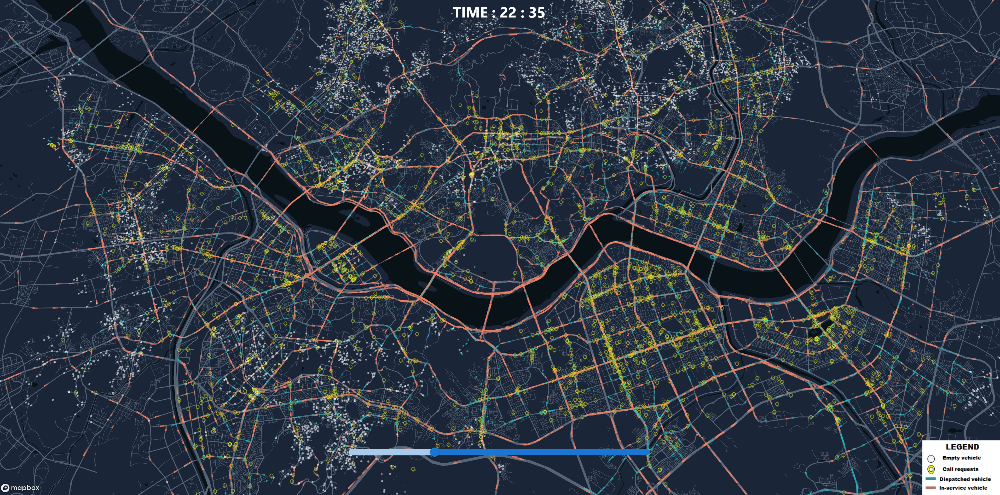
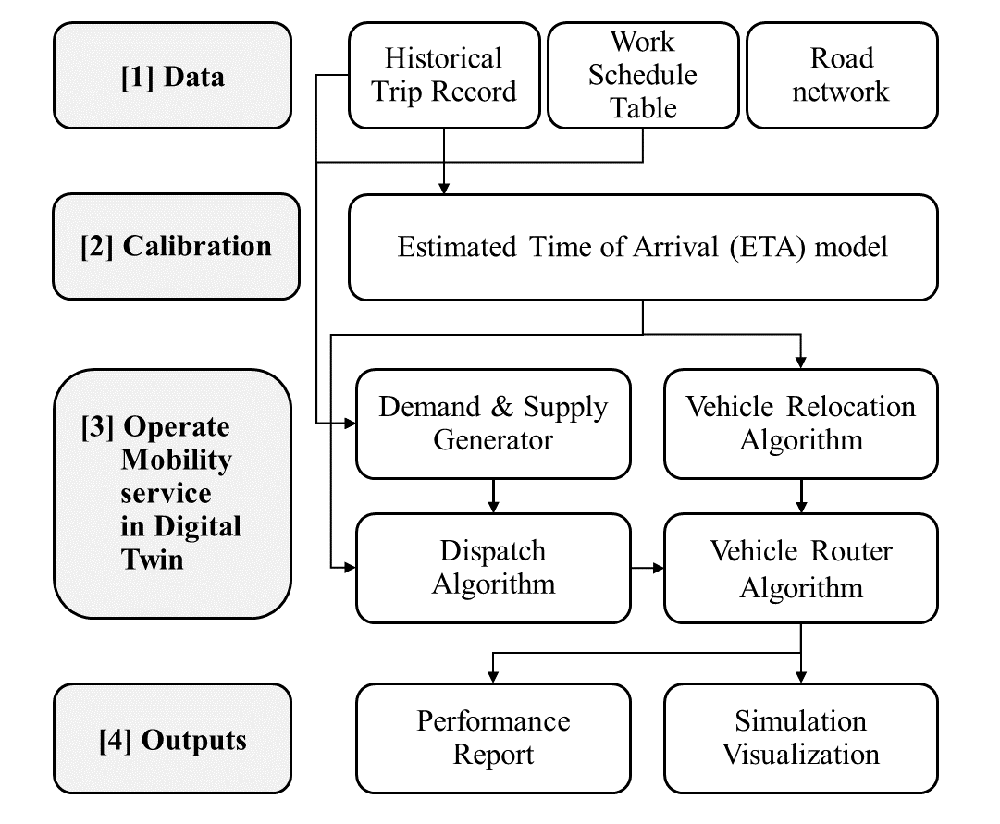

1. Introduction#
1.1 What is Good Mobility Systems?#
우리가 살아가는 도시는 끊임없이 변화하고, 발전하며, 때로는 쇠퇴한다. “무엇이 좋은 도시인가?”, “도시는 어떤 방향으로 변화해야 하는가?” 이러한 질문들은 깊이 고민해볼 가치가 있다. 이 책에서는 도시를 구성하는 다양한 요소들 중 ‘모빌리티’, 즉 ‘이동’에 초점을 맞춘다. 특히 우리의 ‘이동’을 돕는 시스템에 대해 심도 있게 다룬다.
모빌리티 시스템은 우리 일상 곳곳에 존재한다. 출퇴근과 등하교 시 이용하는 자동차, 버스, 지하철부터 자전거, 전동킥보드, 그리고 우리의 두 발까지 모두가 이동수단이자 모빌리티 시스템의 일부다. 더 나아가, 음식 배달 서비스나 택배 시스템을 통해 우리 집 문 앞까지 도착하는 물품의 이동 또한 모빌리티 시스템에 포함된다.
그렇다면, 과연 ‘좋은 모빌리티 시스템’이란 무엇일까? 이는 단순히 빠르고 편리한 이동만을 의미하는 것일까, 아니면 그 이상의 가치를 내포하고 있을까? 이 책은 이러한 근본적인 질문에 답하기 위한 도구와 관점을 제공한다. 우리는 모빌리티 시스템을 분석하고 평가하는 방법을 학습함으로써, 더 나은 도시 환경과 삶의 질 향상을 위한 통찰을 얻을 수 있을 것이다.
1.2 The Necessity of Simulation#
새로운 모빌리티 시스템을 테스트할 수 있는 플레이그라운드가 없다는 점이 주요 연구 질문이 되었다. 현재 여러 가상 환경이 존재하지만 모빌리티 시스템 운영에 적합하지 않다. 예를 들어, 테슬라의 자율주행 시뮬레이션은 자율주행 차량과 로봇 훈련을 위한 디지털 트윈에 중점을 둔다. VISSIM, SUMO, AIMSUN과 같은 교통 시뮬레이션 도구들은 확장성 문제로 인해 대규모 도시 수준의 차량 운영에는 적합하지 않다. 서울이나 뉴욕과 같은 대도시 수준의 택시나 UAM 서비스를 구현할 수 있는 도구가 현재로서는 없다.
1.3 What is Urban Mobility Simulation?#
Urban Mobility Simulation은 도시의 교통 및 이동 시스템을 가상으로 모델링하고 시뮬레이션하는 기술이다. 이는 실제 도시 환경에서 다양한 교통 수단과 사람들의 이동 패턴을 컴퓨터상에서 재현하는 것을 목표로 한다.
현실 세계에서 다양한 모빌리티 서비스를 테스트하는 것은 비용, 이해관계 충돌, 안전 문제 등으로 인해 불가능하다. 따라서 로보틱스 분야에서 사용되는 OpenAI gym, Mujoco와 같은 가상 환경처럼 모빌리티 시스템 운영에 특화된 가상 환경을 만들 필요가 있다.
{kind=link}
[Urban Mobility Simulation Example (Taxi services in Seoul)]
1.4 Mobility Simulation Framework#
이러한 문제를 해결하기 위해 DTUMOS(Digital Twin for Urban Mobility Operating System)라는 프레임워크를 제시하였다. DTUMOS는 도시 모빌리티 운영 시스템을 위한 디지털 트윈으로, 경량화되고 오픈소스 기반의 프레임워크이다. 아래 그림에서 확인할 수 있듯이 모든 기능을 개별 모듈로 분리하여 높은 확장성과 유연성을 제공한다.
{kind=link}
[Framework of Mobility Simulation]
[1] Data#
먼저 가장 첫번째에 위치한 Data에서는 시뮬레이션을 구동하기 위한 필수적인 입력데이터를 나타낸다. Historical Trip Record는 승객 혹은 물품배송에 대한 요청 데이터를 의미한다. 택시를 예로 들자면, 승객들이 언제, 어디에서 택시를 호출해서 어디로 가고자 하는지를 담고 있는 정보일 것이며, 물품 배송 문제라면 물건을 싣는 곳과 배송하는 곳의 위치 정보를 포함할 것이다. 모빌리티 시스템 역시 수요와 공급의 원칙에 의하여 작동되며, 따라서 이 데이터는 모빌리티 서비스를 이용하고자 하는 ‘수요’를 나타낸다. Work Schedule Table은 반면 공급을 의미한다. 서비스를 구성하는 전체 차량의 대수는 몇대인지, 그리고 해당 차량 운전사들의 근무 테이블에 대한 정보를 담고 있다. 이 데이터를 통해 전체적인 Fleet size가 결정이 될 것이고, 또 시간대별 서비스 중인 차량의 대수가 결정될 것이다.
마지막으로 Road Network는 차량이 움직이는 도로의 네트워크를 나타낸다. 여기서 네트워크는 다양할 수 있다. 택시나 버스처럼 도로위를 다니는 경우 일반 도로 네트워크를 사용할 것이고, 반면 지하철이나 UAM과 같이 특정한 노선이나 항로를 다니는 경우 이에 맞는 네트워크 구조가 필요할 것이다. 여기서의 네트워크는 점과 선으로 이루어진, 즉 Node와 Edge로 이루어진 Graph를 의미한다. 일반 도로망의 경우 Node는 보통 교차로를 나타내며 Edge는 교차로 사이를 잇는 도로망으로 표현된다. 지하철의 경우 Node는 지하철 역사가 될 것이고, Edge는 지하철 역 사이의 철로가 될 것이다. Road Network 데이터는 모빌리티 시뮬레이션이 현실과 유사하게 작동되는데 매우 핵심적이며, 향후 다루게 될 Vehicle Router 알고리즘에 중요한 입력자료로 활용된다.
[2] Calibration#
두번째 레이어인 Calibration에서는 모빌리티 시뮬레이션이 현실과 유사하게 작동하기 위한 보정작업에 필요한 모듈을 담고 있다. 여기서는 Estimated Time of Arrival (ETA) model이 핵심적인 역할을 한다. 이 모델은 Historical Trip Record와 Road Network 데이터를 입력으로 받아, 특정 경로의 예상 도착 시간을 계산한다. 이를 통해 시뮬레이션의 시간 추정 정확도를 높이고, 현실적인 이동 시간을 반영할 수 있다.
[3] Calibration#
세번째 레이어인 Operate Mobility service in Digital Twin은 모빌리티 서비스를 운영하고 시뮬레이션을 구동할 때 필요한 핵심적인 알고리즘들을 포함한다. Demand & Supply Generator는 앞서 입력으로 사용한 Trip Record 데이터와 Work Schedule 데이터를 사용해 공간상에 수요(e.g., 승객)와 공급(e.g., 차량)을 생성하는 과정이다. 이 과정이 왜 필요한지 의문이 들 수 있으나, 시뮬레이션에 랜덤성을 줄 필요가 있다. 매번 같은 결과가 나온다면 시뮬레이션이 아닐것이다. 따라서 이 모듈에서는 우리가 가지고 있는 데이터를 사용해 랜덤한 수요와 공급을 생성하는 다양한 통계적 기법이 활용된다. 예를 들어, 포아송 프로세스나 몬테카를로 시뮬레이션 등이 사용될 수 있다.
Note
몬테카를로 시뮬레이션이란 확률적 알고리즘을 사용하여 복잡한 시스템의 행동을 시뮬레이션하는 기법이다. 이 방법은 랜덤 샘플링을 반복적으로 수행하여 결과의 분포를 추정하며, 불확실성이 높은 상황에서 유용하게 사용된다.
예를 들어, 서울의 강남역 부근에서 평일 저녁 6시부터 7시 사이의 택시 수요를 시뮬레이션한다고 가정해보자. 과거 데이터를 분석해 이 시간대에 평균적으로 시간당 30명의 승객이 택시를 잡는다고 가정하자. 택시수요가 포아송 분포를 따르고 평균(λ)을 30으로 설정하면 아래와 같은 결과가 나올 수 있다.
18:00-18:01: 0명
18:01-18:02: 1명
18:02-18:03: 0명
18:03-18:04: 2명
…
18:59-19:00: 1명
이렇게 생성된 숫자의 총합은 대략 30명 근처가 되지만, 매번 시뮬레이션할 때마다 다른 결과가 나오게 되며, 따라서 우리는 시뮬레이션을 여러번 돌려 더 안정적이고 신뢰할 수 있는 결과를 얻을 수 있다.
Vehicle Router Algorithm은 Road Network 데이터를 기반으로 최적 경로를 계산한다. 이 알고리즘은 그래프 이론을 바탕으로 한 다양한 최단 경로 알고리즘을 활용한다. 대표적으로 다익스트라(Dijkstra) 알고리즘과 A* 알고리즘이 널리 사용된다. 다익스트라 알고리즘은 모든 노드에 대한 최단 경로를 찾는 데 효과적이지만, 대규모 네트워크에서는 계산 시간이 길어질 수 있다. 반면 A* 알고리즘은 휴리스틱 함수를 사용하여 목표 지점으로의 방향성을 고려하므로, 더 빠르게 최적 경로를 찾을 수 있다.
우리가 일상적으로 사용하는 Naver, Kakao, Google 지도의 길찾기 서비스나 네비게이션 시스템도 이와 유사한 알고리즘을 기반으로 작동한다. 이들 서비스는 실시간 교통 정보와 결합하여 더욱 정확하고 효율적인 경로를 제시한다. 본 강의에서는 이러한 상용 API를 활용하여 경로를 추출하는 방법을 학습할 예정이다. 또한, 앞서 구축한 Road Network에서 직접 그래프를 추출하여 경로를 산출하는 알고리즘을 실습함으로써, 알고리즘의 작동 원리를 깊이 이해하고 실제 적용 능력을 기를 것이다.
Dispatch Algorithm은 수요와 공급을 효율적으로 매칭하는 핵심 알고리즘이다. 택시 서비스를 예로 들면, 승객의 호출이 들어왔을 때 어떤 택시를 배정할지 결정하는 역할을 한다. 현재 한국의 택시 시스템에서는 주로 택시 기사들에게 호출 정보(콜)를 제공하고, 기사가 수락 여부를 결정하는 방식을 채택하고 있다. 그러나 이는 효율성 측면에서 한계가 있을 수 있다.
최근 학계와 업계에서는 다양한 최적화(Optimization) 알고리즘을 적용하여 승객과 차량을 더욱 효율적으로 매칭하는 방법을 연구하고 있다. 이러한 알고리즘의 목표는 상황에 따라 다르지만, 일반적으로 승객의 대기 시간 최소화, 차량의 공차 시간 감소, 전체 시스템의 운영 효율성 증대 등을 포함한다. 예를 들어, 헝가리안 알고리즘(Hungarian Algorithm)이나 유전 알고리즘(Genetic Algorithm) 등이 이러한 최적화 문제에 적용될 수 있다.
Vehicle Relocation Algorithm은 ETA 모델의 결과를 바탕으로 차량의 재배치 전략을 수립하는 중요한 알고리즘이다. 이는 특히 수요와 공급의 불균형이 발생하는 도시 환경에서 중요한 역할을 한다. 전통적으로 버스는 정해진 노선과 배차 간격에 따라 운행되었고, 택시의 경우 기사의 경험에 의존하여 이동했다. 그러나 빅데이터와 인공지능 기술의 발전으로, 보다 과학적이고 효율적인 차량 재배치가 가능해졌다.
데이터 기반의 차량 재배치는 여러 가지 이점을 제공한다. 첫째, 수요 예측을 통해 특정 지역과 시간대의 수요 패턴을 파악하고, 이에 맞춰 사전에 차량을 배치할 수 있다. 둘째, 실시간 교통 상황과 이벤트 정보를 고려하여 동적으로 차량을 재배치함으로써 긴급 상황에 더 빠르게 대응할 수 있다. 셋째, 차량의 공차 시간을 줄이고 운행 효율성을 높여 전체 시스템의 경제성을 개선할 수 있다.
더욱이, 자율주행 차량과 배달 로봇 등 새로운 모빌리티 수단의 등장은 Vehicle Relocation Algorithm의 중요성을 더욱 부각시킨다. 이러한 무인 시스템은 인간 운전자의 직관이나 경험에 의존할 수 없기 때문에, 데이터 기반의 과학적인 재배치 전략이 필수적이다. 따라서 앞으로 Vehicle Relocation Algorithm은 스마트 시티와 미래 모빌리티 시스템의 핵심 요소로 자리잡을 것으로 예상된다.
[4] Outputs#
마지막으로 Outputs 레이어에서는 Performance Report와 Simulation Visualization을 통해 시뮬레이션 결과를 종합적으로 분석하고 시각화한다.
Performance Report는 시뮬레이션 완료 후 모빌리티 시스템의 성능을 정량적으로 평가할 수 있는 다양한 지표를 제공한다. 주요 지표에는 다음과 같은 항목들이 포함될 수 있다.
사용자 측면: 평균 대기시간, 최대 대기시간, 탑승 실패율
운영 측면: 차량 이동거리, 공차율, 차량 회전율
경제적 측면: 총 수익, 운영 비용, 수익성 지표
지역 분석: 주요 탑승 및 하차 위치, 핫스팟 분석
Simulation Visualization은 시뮬레이션의 동적인 측면을 시각적으로 표현한다. 이를 통해 사용자는 시공간상에서 수요와 공급의 분포, 차량의 이동 패턴, 혼잡 지역 등을 직관적으로 파악할 수 있다. 주요 기능은 다음과 같다.
실시간 차량 위치 및 상태 표시
수요-공급 불균형 지역 하이라이팅
시간대별 수요 변화 애니메이션
주요 성능 지표의 실시간 업데이트
이러한 Output 툴을 통해 사용자는 모빌리티 시스템의 전반적인 성능을 평가하고, 잠재적인 문제점을 식별하며, 시스템 개선을 위한 인사이트를 얻을 수 있다. 또한, 다양한 시나리오를 비교 분석함으로써 최적의 운영 전략을 수립하는 데 활용할 수 있다.